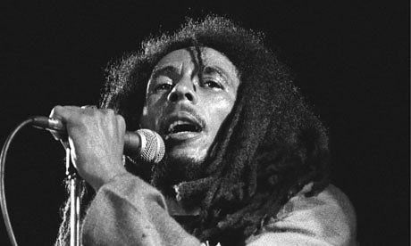

22 April 1978: Number 36 in our series of the 50 key events in the history of world and folk music
The One Love Peace Concert, held in the outdoor National Stadium in Kingston, the Jamaican capital, was the longest and most political reggae concert ever staged, and one of the most remarkable musical events I have attended. That day in April was a remarkable day for Jamaican reggae and its greatest celebrity, Bob Marley. It started at 5pm, and ended, under a full moon, in the early hours of the following morning with the prime minister Michael Manley and opposition leader Edward Seaga embracing two previously notorious rival gang leaders, Bucky Marshall and Claude Massop. The two political leaders then joined hands with Bob Marley, in an emotional scene that was made all the more bizarre by the billowing marijuana clouds provided by the watching Rastafarians.
This was also the first concert that Bob Marley, Jamaica's international celebrity, had given in his homeland in a year and a half. He had left the country after what appeared to be a politically motivated assassination attempt in December 1976, when unknown gunmen, assumed to be linked to the JLP, fired on him inside his home, wounding the singer in the chest and arm. Opposition groups claimed that Marley supported Manley, because he had agreed to appear at the Smile Jamaica free concert, organised by Manley, which aimed to stop fighting between the warring political street gangs.
The Peace Concert had many of the same aims, but very different organisation. This show was put together by the gang leaders Marshall and Massop, who now called themselves a peace committee and said that their aim was to raise money to improve conditions in the Kingston ghettos. The audience was divided into sections marked "togetherness", "love" and "peace" (peace being the most expensive ticket), while the government provided extensive police and military assistance to stop any trouble. There was even a ban on the sale of oranges in the stadium, as they were considered to be potential weapons.
Bob Marley headed the bill, preaching unity and showing why he had become an international star, with a short set that included Trenchtown Rock, Natty Dread and War. He was not singing as well as he had at his memorable London shows at the Lyceum in 1975 or Rainbow in 1977, but was still exhilarating to watch, and it would have been impossible for any other artist to create such a theatrical, emotional finale. He improvised the lyrics to Jamming, demanding "could we have here on stage the presence of Mr Michael Manley and Mr Edward Seaga? I just wanna shake hands and show the people that we're gonna unite".